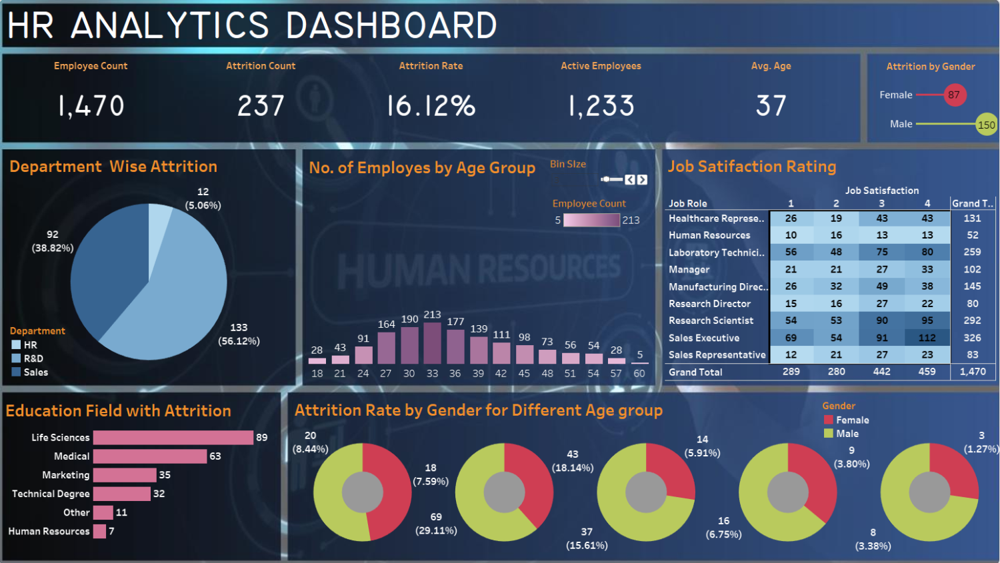

Objective
To analyze the factors contributing to employee attrition and provide actionable insights for reducing turnover, improving employee satisfaction, and enhancing workforce stability.
Skills Showcased
- Tableau
- Data Visualization
- Data Analysis
- Excel
- Data Cleaning
Dashboard Visualization
Click below to view the full dashboard:
Key Findings
- Overall Attrition: The organization has a total workforce of 1,470 employees with an attrition rate of 16.12% (237 employees leaving).
- Department-Wise Analysis: The Sales department has the highest attrition rate (56.12%), followed by R&D (38.82%).
- Age Group Analysis: Employees aged 30-36 show the highest attrition rates (18.14%).
- Gender Disparity: Male employees account for more attrition (150), while females show significant attrition considering their smaller representation.
- Educational Background: Life Sciences and Medical field employees have the highest turnover.
- Job Satisfaction: Mixed satisfaction trends, especially among Sales Executives and Laboratory Technicians.
Recommendations
- Conduct targeted surveys in Sales and R&D departments to identify dissatisfaction drivers.
- Develop programs addressing career growth and work-life balance for employees aged 30-36.
- Enhance support for younger employees (18-24) through mentorship and professional development.
- Realign roles for employees with Life Sciences and Medical backgrounds to better match their skills.
- Implement recognition programs and improve managerial training to boost job satisfaction.